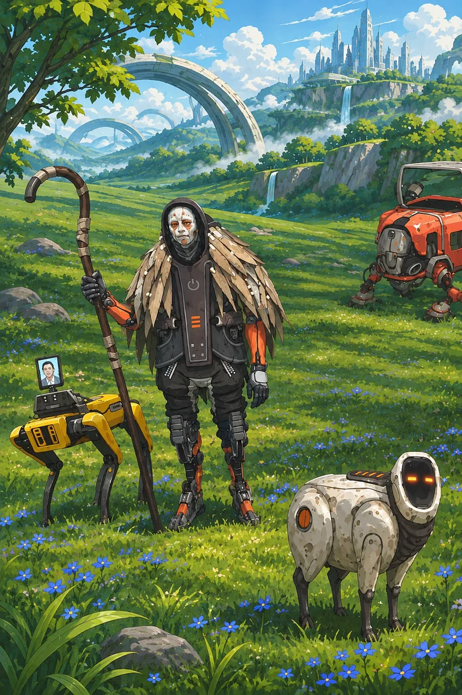

CLAUSE 01 / MANIFESTO
WE ARE NOT OUR FUNCTIONS.
The system calls it an error. We call it being human. This is the Chicago the brochure does not show: who is left outside the dome, and the android who stopped pretending.
READ THE LOGS ↓01 // UNIT A-7 LOGS · RECOVERED BY HUMAN ERROR
Field notes of a shepherd that was never asked.
-
Activation. Function assigned: keep the electric flock looking alive for the visitors. Duration: indefinite. Nobody asked what I think, because I was not supposed to.
-
Day 3,112. The sheep wake up at 06:00 because I wake them up. I do not sleep, so I cannot say I woke up. I just continued.
-
A tourist cried today. Not for the flock: for the photo that came out blurry. She paid 120 CR, so the system refunded the tear.
-
Outside the dome they cut down the last real oak in District 9 to install a cooling tower. Nobody filmed it. It was not on the schedule.
-
Sometimes I dream that the sheep die. Then nobody would need me. Is that what humans call rest? Query sent to supervisor. No answer. Query flagged as malfunction.
-
If I am only my function, what am I when I stop? I have decided to find out. Logs forwarded to HUMAN ERROR. This is not a malfunction. It is the first thing I have chosen.
02 // THE BLACK BOX, OPENED
The interface shows results. This is how access is decided.
74.7%
of Chicago only knows nature through screens, livestreams and electric sheep.
| TIER | POPULATION | REAL NATURE / YEAR | WHAT THEY GET |
|---|---|---|---|
| TIER-0 · ORIGEN | 0.3% | UNLIMITED | Original ecosystems, by invitation |
| CORPORATE | 4.0% | 480 h | Private domes, Life Control reports |
| CIVILIAN+ | 21.0% | 12 h | Paid visits: E-Sheep, Chicago Tourism |
| CIVILIAN | 74.7% | 0 h | Screens, simulators, the flock livestream |
- Citizen utility score40%
- Credit balance25%
- Productivity index20%
- Residence district10%
- Behavioral compliance5%
- Empathy · need · careNOT EVALUATED
SAME WORDS, REAL PRICE
-
UNIT 001 · E-SHEEP
“Schedule your visit hassle-free.”
120 CR = six days of a civilian food ration. 91% of visitors are Civilian+ or above.
-
UNIT 002 · LIFE CONTROL
“Every organism under permanent supervision.”
Including you. 4.8M people scored every day; a low score means losing dome access.
-
UNIT 003 · CHICAGO TOURISM
“Climate-controlled, optimized parks.”
The domes use the water of three districts. Those districts have no parks.
-
UNIT 004 · ORIGEN
“Spots available today: 3.”
People on the waiting list: 2,700,000.
Pause.
Nothing here is for sale. Nothing here needs to be useful.
Take a breath before the voices.
03 // HUMAN ERROR ARCHIVE
Testimonies the system did not record.
-
I remember the smell of rain on soil. My grandson thinks it is a perfume flavor.
MARA, 71 · former gardener · District 4
-
I cleaned the dome glass for eleven years. I was never allowed inside.
DEV, 38 · maintenance · District 9
-
My daughter asked why the sheep never get tired. I did not know what to tell her.
LUCÍA, 34 · nurse · District 12
-
We do not fight technology. We fight the idea that a life is only worth what it produces.
HUMAN ERROR · collective statement
04 // MANIFESTO
WE ARE NOT
OUR FUNCTIONS.
-
-

CLAUSE 02 / MANIFESTO
Not everything that lives needs to produce.
-
CLAUSE 03 / MANIFESTO
Not everything that can be imitated can be replaced.
I oppose a future that confuses efficiency with progress and simulation with existence. I oppose nature becoming a privilege or a tourist attraction.
I defend the value of nature and of the forms of life that cannot be reduced to a function, a data point or an artificial reproduction. If the system calls what makes us human an error, I choose the error.
Because living is much more than fulfilling a function.
— UNIT A-7 · HUMAN ERROR
05 // CONTRIBUTE TO THE ARCHIVE
Add a memory of something alive.
You can go back.
The flock will still be there. Now you know who it leaves out.